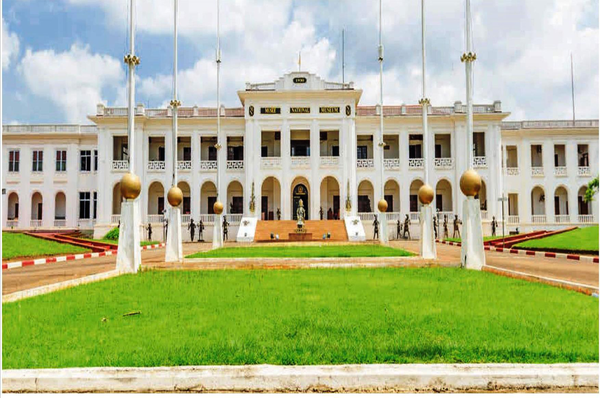

- Le monument est érigé entre 1973 et 19761, le monument est à Yaoundé pour immortaliser l'avènement de la Réunification du Cameroun francophone et anglophone en 1961.
- Bâti sur une superficie de 5 000 m27, le musée national, qui symbolise la régénération et la renaissance de la culture camerounaise a servi de résidence au représentant de l'autorité administrative française au Cameroun.
- Situées dans la région du Littoral à quelques kilomètres de Nkongsamba, ces belles et majestueuses chutes d'eau au coeur d'une nature luxuriante résultent du fleuve Nkam et font 80 mètres de hauteur.
- Produite par Joseph-Francis Sumégné en 1996, la Nouvelle Liberté est une majestueuse sculpture de 12 mètres constituée de fer de récupération, érigée au milieu du Rond-Point Deido, le plus fréquenté de Douala. Son envergure est de 5 mètres et sa masse totale de 8 tonnes.
- Situées à sept kilomètres au sud de Kribi, elles ont la particularité rare au monde du fait que le fleuve Lobé se jette directement dans l'océan Atlantique. Elles constituent l'attraction majeure de Kribi.